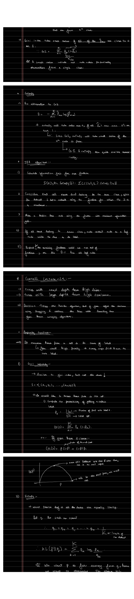

Entropy, Gini & Information Gain
Part 1 left one question open: where should a node split the data? Answering it needs a number that says how mixed a set of labels is. This part defines two such impurity measures, entropy and the Gini index, turns them into a split criterion through information gain, and states the ID3 algorithm that puts it all together.
Entropy
Entropy measures the amount of information, or uncertainty, in a random variable. Given a set of outcomes occurring with probabilities $p_1, p_2, \dots, p_n$, entropy is the negative sum of weighted log-probabilities:
$$H = -\sum_{i=1}^{n} p_i \log(p_i).$$Two properties make it the right notion of uncertainty:
- $H = 0$ only when one $p_i$ equals $1$ (all others zero). The outcome is certain, so there is nothing to be uncertain about. A node holding a single class has zero entropy: it is pure.
- $H$ is maximal when all $p_i$ are equal. This is the most uncertain, most impure situation. A node holding many classes in equal proportion is maximally impure.
For two classes with proportions $p$ and $1-p$, entropy rises from $0$ at $p=0$, peaks at $1$ bit when $p=\tfrac12$, and returns to $0$ at $p=1$.

The Gini Index
The Gini index is a second, cheaper impurity measure. With $p_{mk}$ the proportion of training observations in region $m$ that come from class $k$, the Gini index of that region is
$$G = \sum_{k=1}^{K} p_{mk}\,(1 - p_{mk}).$$It takes a small value when all $p_{mk}$ are close to $0$ or $1$, meaning the node contains predominantly observations from a single class. Like entropy, it is small for a pure node and large for a mixed one. Numerically the Gini index and entropy behave very similarly; the Gini index avoids the logarithm, so it is slightly faster to compute.
Information Gain
A split is good when it reduces impurity. Information gain measures exactly that: take the impurity of the data before the split and subtract the (size-weighted) impurity of the children after the split:
$$\Delta\text{IG} \;=\; H(\text{parent}) \;-\; \frac{1}{N}\sum_{c \,\in\, \text{children}} N_c\, H(\text{child}_c),$$where $N$ is the number of points at the node and $N_c$ the number reaching child $c$. The algorithm selects the split that yields the largest reduction in impurity, equivalently the largest increase in information. The animation below sweeps a threshold across a one-dimensional dataset, computes the information gain of each candidate split, and tracks the best one.
▶ Finding the Best Split by Information Gain
Eight points carry two classes (green = A, orange = B). Each candidate threshold splits them into left and right sets; the bars show each side's entropy, and the running best information gain is tracked.
The ID3 Algorithm
The classic recipe that uses information gain to build a tree is ID3. It starts at the root and works greedily, top-down, computing impurity reduction at each depth:
- Compute the information gain of splitting on each available feature.
- If the rows do not all share one class, split the dataset $S$ into subsets using the feature with maximum information gain.
- Make a decision node using that feature.
- If all rows at a node belong to the same class, make it a leaf labelled with that class.
- Recurse on the remaining features until features run out or every branch ends in a leaf.
Entropy and the Gini index were stated here as definitions. Part 3 shows where entropy actually comes from: it is the impurity measure that makes a node's distribution as far as possible from the uniform, derived through the KL divergence.